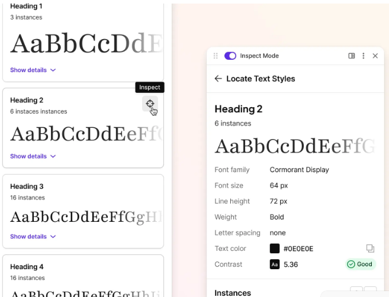
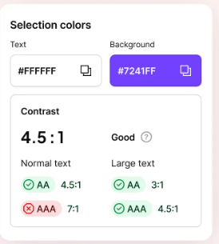

Inspect Mode + Token Readout
Capture computed values with immediate element-level clarity.
Free
Feature Section Explorations
Each block below demonstrates a different design style for the homepage feature area. You can compare clarity, visual impact, and how well each style shows Free versus Pro capabilities with real tool screenshots.
Option 1
Large narrative screenshot on one side, capability proofs on the other. This removes button-like pills and replaces them with metadata language.

Capture computed values with immediate element-level clarity.
Find drift locations on page before handing off to implementation.
Move from one-off checks to repeatable production audits.
Option 2
Use a visual workflow to explain the product journey from scan to review to export.
Extract style values and build baseline tokens from live pages.

Detect contrast risks, compare snapshots, and prioritize fixes.
Ship to CSS/JSON quickly, then unlock advanced families with Pro.
Option 3
A mixed-size grid that balances product shots, capability summaries, and proof metrics.
Use one large tile for the most trusted screenshot and keep supporting data around it.
Element-level insights with predictable handoff vocabulary.
Contrast and drift checks packed into one workflow space.
Core outputs in Free, advanced families in Pro.
Visual audit reports and snapshot intelligence for teams.
Option 4
Keep one screenshot visible while users scan through capability blocks on the right.
Collect color, typography, spacing, and variable evidence in one pass.
Pair snapshot comparisons with accessibility checks for higher confidence rollout.
Send outputs to developer and design ecosystems without rebuilding mappings.
Use unlimited limits, advanced exports, and recommendations to scale workflows.
Option 5
Keep the section compact by switching between feature families without leaving the page.